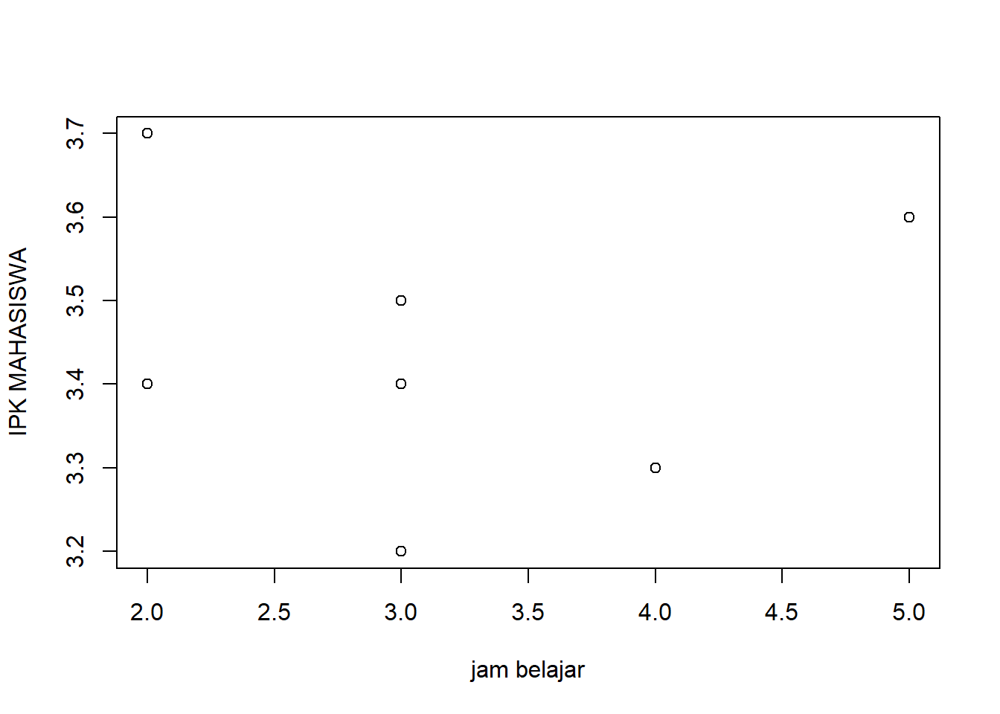

library('readxl')
dat<-read_excel('Nilai Mahasiswa.xlsx')ANALISIS PERBANDINGAN LAMA BELAJAR MAHASISWA SAAT KULIAH ONLINE DAN OFLINE DENGAN IPK YANG DIDAPAT
ANALISIS PERBANDINGAN LAMA BELAJAR MAHASISWA SAAT KULIAH ONLINE DAN OFLINE DENGAN IPK YANG DIDAPAT

Azizan Fatah (210203903)
PIWAR 3D
Bab I Pendahuluan
1.1 Latar Belakang
Dari yang kita ketahui bahwa sejak 2020 dunia menghadapi Pandemi Covid-19 yang dimana para pemerintah di setiap negara mewajibkan warganya untuk berdiam diri di rumah dan tidak melakukan aktifitas di luar ruangan, hal ini berlaku bagi seluruh masyarakat di negara nya masing masing, termasuk siswa/i dan mahasiswa/i. bahkan di indoensia juga berlaku juga hal ini, pemerintah membuat metode pembelajaran baru yang mudah disesuaikan oleh para pelajar, yang dimana para pelajar harus melakukan pembelajaran dengan cara daring atau online. di zaman yang serba cepat ini kita mahasiswa dituntut untuk bisa beradaptasi dalam hal apapun baik akademis maupun non akademis. semaunya bergerak begitu cepat dan seluruh manusia dipaksa oleh keadaan untuk beradaptasi secara ekstrem, namun tentunya perubahan yang begitu cepat tidak selalu baik, sekalipun hal tersebu baik tapi pasti ada sisi yang tidak sempurna, yang mungkin bagi sebagian orang hal tersebut bisa menamba keuntungan baginya dan di sisi lain pasti ada yang mendapat kerugiannya, dan kami mahasiswa merasa bahwa kami mendapatkan keduanya.
kenapa begitu?,karena kami dituntut untuk beradaptasi terhadap sesesuati yang baru, tapi bukan beradaptasi terhadap teknologi maupun perubahan metode belajarnya, tapi kami dituntut untuk bisa beradaptasi terhadap sistem, sistem yang dibuat sedemikian rupa oleh pemerintah agar bisa tetap memaksimalkan potensi kami sebagai mahasiswa namun justru kami merasa sebaliknya, karena jadwal yang kebanyakan tidak teratur tidak memiliki polanya yang membuat kami lelah tidak hanya secara fisik namun juga mental, namun dibalik hal itu kami mendapat keuntungan seperti bisa belajar sambil terlentang di kasur.Namun masih banyak kerugian dan keuntungan yg kami dapat selain dua hal tersebut.
1.2 Batasan Masalah
Karena luasnya topik yang akan dibahas kali ini batasan masalah hanya akan mengacu kepada perbandingan IPK mahasiswa saat Online Learning dan Offline Learning dengan waktu belajar yang sama, untuk melihat ke efektifitasan antara kedua variabel sistem tersebut yang diterapkan oleh pemerintah itu sendiri.
1.3 Rumusan Masalah
Rumusan yang dapat kita ambil jika merujuk dari batasan masalah tersebut adalah:
- lebih efektif sistem Online learning atau Offline learning?
- Apakah lebih banyak kerugian atau keuntungan yang diapat bagi mahasiswa di kedua variabel tersebut?
1.4 Tujuan dan Manfaat Penelitian
Tujuan penelitian ini sendiri adalah untuk membandingkan sistem pembelajaran mana yang lebih efektif diantara kedua variabel tersebut serta memberikan informasi sederhana yang mudah dipahami dan menggunakan bahasa sehari hari(informal) dan menggunakan penyajiuan data yang sangat mudah untuk dibaca agar pembaca dapat lebih nyaman dalam menggali informasi yang mereka butuhkan tanpa harus berfikir keras untuk memahami tulisan ini.
Bab II Studi Pustaka
2.1 Teori I
Karena dampak dari pandemi yang mengharuskan para mahasiswa melakukan pembelajaran di rumah dan harus beradaptasi secara ekstrem terhadap sistem baru, dan juga kebijakan sistem tersebut malah merugikan sebagian mahasiswa, mengapa begitu?, karena metode belajar setiap orang pasti berbeda ada yan lebih dominan ke arah visual, ada yang dominan audio, dan ada yg dominan verbal. bagi saya sendiri saya bisa menggunakan ketiganya, namun lebih condong ke arah visual dan audio. bagi saya sendiri pembelajaran online kurang menguntungkan karena tidak berbicara langsung dengan dosen jadi dari 100% materi yang beliau jelaskan mungkin hanya 40%-60% yang dapat mahasiswa terima itupun dengan penerimaan yang samar samar. dan kerugian lain bagi hampir 30% mahasiswa di indonesia tidak dapat akse internet di daerahnya, idak hanya mahasiswa namun hal ini juga dirasakan oleh pelajar sekolah dasar hingga menengah atas. Dan juga sistem ini bisa dibilang merugikan mahasiswa itu sendiri karena banyak sekali celah berlaku curang saat ujian online ataumelakukan quis quis ringan dari pengajar.
2.2 Teori II
Jika pemerintah membuat kebijakan seperti Online learning yang artinya setiap lembaga pendidikan harus menyiapkan server demi kelancaran Online learning, serta para pelajar diwajibkan untuk memiliki jaringan internet yang memadai serta perangkat yang bisa digunakan, namun tentunya tidak semua mahasiswa memiliki perangkat yang memadai hal ini bisa memberatkan mereka juga ditambah lagi harus selalu membeli paket internet perbulannya agar tetap bisa mengikuti pembelajaran yang artinya setiap pelajar harus mengaluarkan uang lebih banyak dapipada biasanya dan tidak semua pelajar mampu untuk melakukan itu.
2.3 Kerangka Penelitian
Penelitian ini dilakukan dengan sederhana, dengan membuat survey dan disebarkan ke beberapa mahasiswa dan melakukan pengumpulan data tersebut sehingga saya bisa membuat tulisan ini dan dengan mengacu kepada beberapa jurnal yang sudah melakukan penelitian ini telebih dulu sebelum yang saya lakukan.
Bab III Metode Penelitian
3.1 Data

X sebagai lama mahasiswa belajar, S adalah IPK mahasiswa saat kuliah Online dan Y adalah IPK mahasiswa saat kuliah Offline. data tersebut didapatkan setelah melakukan survey terhadap beberapa mahasiswa
3.2 Metode Analisis
Metode analisi yang digunakan yaitu metode kualitatif dengan menyebar survey ke beberapa mahasiswa yaitu teman saya sendiri dan saya memilah beberapa data yang jelas agar lebih nyaman saat dibacaa, dan juga analisis ini menggunakan sistem R dan aplikasi R studio sebagai sarana pembatu pembuatan regresi dan plot yang ada di dalam tulisan ini.
Bab IV Pembahasan
4.1 Pembahasan Masalah
Berdasarkan hasil survey yang sudah di data serapih mungkin agar mudah dibaca,bahwa sebagian mahasiswa menyukai pembelajaran online karena menurut mereka lebih fleksibel dan lebih santai karena tidak harus mengluarkan tenaga atau bangun dipagi hari dan berangkat ke tempat pembelajaran. Sedangkan mahasiswa lainnya tidak setuju dengan pendapat itu, karena menurut mereka pembelajaran offline lebih baik karena kita dapat berinteraksi dengan pengajar langsung dan bisa lebih banyak menyerap informasi daripada berdiam diri dikamar hanya memandang layar laptop atau PC yang digunakan, dan mereka berkata bahwa pembelajaran online dapat menambah banyak experience karena bertemu banyak orang secara langsung. dan dari data di atas kita dapat melihat bahwa bagi beberapa mahasiswa ada yang memiliki nilai yang lebih baik ketika pembelajaran online dan ada yang mendapakan nilai lebih baik saat pembelajaran offline.
4.2 Analisis Masalah
library('readxl')
dat<-read_excel("Nilai Mahasiswa.xlsx")
plot(dat$X,dat$Y,xlab="jam belajar",ylab="IPK MAHASISWA")
Pada Plot di atas Jam belajar berlaku sebagai “X” dan IPK mahasiswa berlaku sebagai “Y”
dari plot di atas bisa kita simpulkan secara sederhana bahwa 3 orang dengan jam belajar yang sama mendapaatkan hasil yang berbeda.
library('readxl')
dat<-read_excel("Nilai Mahasiswa.xlsx")
reg<-lm(Y~X,data=dat)
summary(reg)
Call:
lm(formula = Y ~ X, data = dat)
Residuals:
Min 1Q Median 3Q Max
-0.24444 -0.04444 -0.04444 0.05556 0.25556
Coefficients:
Estimate Std. Error t value Pr(>|t|)
(Intercept) 3.444e+00 1.794e-01 19.2 2.59e-07 ***
X -2.968e-16 5.704e-02 0.0 1
---
Signif. codes: 0 '***' 0.001 '**' 0.01 '*' 0.05 '.' 0.1 ' ' 1
Residual standard error: 0.1613 on 7 degrees of freedom
Multiple R-squared: 8.658e-30, Adjusted R-squared: -0.1429
F-statistic: 6.061e-29 on 1 and 7 DF, p-value: 1Dari hasil regresi di atas bisa kita lihat bahwa data ini meiliki standar koefisien sebesar -2.968e-16 karena yang kita bandingkan adalah lama belajar dan sistem perkuliahan artinya jika seorang mahasiswa ingin menambah waktu belajarnya selama satu jam standar koefisien meningkat sebesar 2,968e-16.
Bab V Kesimpulan
Kesimpulannya adalah kedua sistem pembelajaran ini memiliki sisi baik dan buruknya masing masing tergantung bagaimana para pelajar menyikapinya, tentu saja setiap perubahan pasti membawa nilai positif dan negatif, dan tentunya tidak semua sistem bisa diaplikasikan dengan baik karena setiap orang punya karakter dan kekurangan serta kelebihannya masing masing. dan mau bagaimanapun bentuk sistemnya kalau memang tidak cocok pelajar akan mencari caranya sendiri untuk melakukan yang terbaik yang ia bisa selama di dalam sistem tersebut.
Daftar Pustaka
Septiani, D. (2018). PERBANDINGAN INDEKS PRESTASI MAHASISWA SEBELUM DAN SESUDAH DITERAPKANNYA PEMBELAJARAN DARING ( STUDI KASUS PADA MAHASISWA PGMI UIN RADEN INTAN LAMPUNG ANGKATAN 2018 ) . UIN RADEN INTAN LAMPUNG.
Husna, K. (2021). ANALISIS HASIL BELAJAR MAHASISWA DENGAN MENGGUNAKAN E-LEARNING PADA MASA PANDEMI COVID 19 DI UNIVERSITAS MUHAMMADIYAH SUMATERA UTARA TA 2020/2021 .